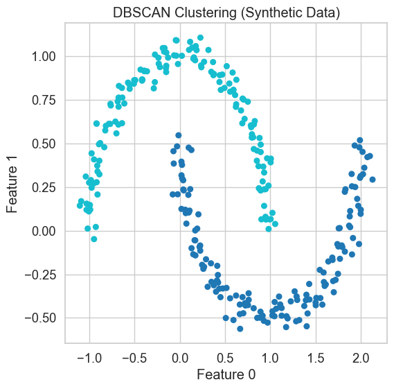
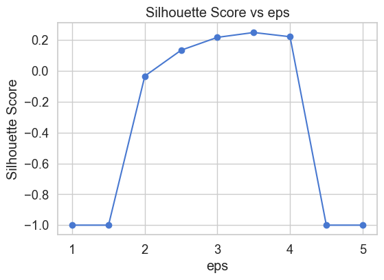

DBSCAN (Density-Based Spatial Clustering of Applications with Noise) is a powerful unsupervised clustering algorithm that groups together points that are densely packed and labels points in low-density regions as noise (outliers).
Unlike K-Means or hierarchical clustering, DBSCAN does not require you to specify the number of clusters. Instead, it discovers clusters based on the idea of density connectivity.
📐 How DBSCAN Works
DBSCAN relies on two key parameters:
eps (ε): The radius that defines the neighborhood around a point.
min_samples: The minimum number of points required to form a dense region (i.e., a cluster).
Using these parameters, DBSCAN classifies each point into one of three categories:
Core Point: Has at least min_samples points (including itself) within a radius of eps.
Border Point: Has fewer than min_samples neighbors, but is reachable from a core point.
Noise Point (Outlier): Neither a core point nor reachable from one.
🔗 Density Connectivity
Two points are density-connected if: - One is reachable from the other by a chain of core points, - Each pair in the chain is within eps distance.
Clusters are formed by chaining together density-connected points, allowing DBSCAN to discover non-spherical, complex-shaped clusters.
✅ Advantages of DBSCAN
Does not require the number of clusters (k) in advance.
Can detect arbitrarily shaped clusters (e.g., spirals, blobs).
Robust to outliers — noise is naturally excluded.
Works well when clusters have different densities.
⚠️ Limitations
Sensitive to the choice of eps and min_samples.
Struggles when clusters have varying densities.
Can be computationally expensive for large datasets without indexing structures.
In the next section, we’ll use DBSCAN on a synthetic dataset to illustrate how these parameters affect the result, and how DBSCAN behaves differently from centroid-based algorithms like K-Means.
Demonstration: Hierarchical Clustering on Synthetic Data
We’ll generate a 2D dataset using make_blobs with 2 clusters and apply dbscan.
from sklearn.datasets import make_moonsfrom sklearn.cluster import DBSCANimport matplotlib.pyplot as pltimport seaborn as snssns.set(style="whitegrid", palette="muted", font_scale=1.2)# Generate dataset with non-globular clustersX_synth, _ = make_moons(n_samples=300, noise=0.05, random_state=42)# Run DBSCANdb = DBSCAN(eps=0.3, min_samples=5)labels = db.fit_predict(X_synth)# Visualise resultplt.figure(figsize=(6,6))plt.scatter(X_synth[:, 0], X_synth[:, 1], c=labels, cmap="tab10", s=30)plt.title("DBSCAN Clustering (Synthetic Data)")plt.xlabel("Feature 0")plt.ylabel("Feature 1")plt.show()

Clustering the Wine Dataset
We now apply DBSCAN to the Wine dataset, which includes 13 chemical measurements of wines from 3 grape cultivars.
Unlike K-Means, DBSCAN does not require knowing the number of clusters. Instead, we will tune key hyperparameters like eps, min_samples, and metric to get meaningful clusters.
The eps parameter defines the radius for a point’s neighborhood. A point is considered a core point if at least min_samples points (including itself) fall within this radius.
A small eps → many points marked as noise
A large eps → clusters merge together
We’ll test a range of eps values and evaluate clustering quality using the Silhouette Score.
from sklearn.cluster import DBSCANfrom sklearn.metrics import silhouette_scoreeps_values = [ 1, 1.5, 2.0, 2.5, 3.0, 3.5, 4.0, 4.5, 5.0]scores_eps = []for eps in eps_values: db = DBSCAN(eps=eps, min_samples=5, metric="euclidean") labels = db.fit_predict(X)# Only evaluate if at least 2 clusters foundiflen(set(labels)) >1and-1in labels: score = silhouette_score(X, labels)eliflen(set(labels)) >1: score = silhouette_score(X, labels)else: score =-1 scores_eps.append((eps, score))df_eps = pd.DataFrame(scores_eps, columns=["eps", "Silhouette Score"])df_epsplt.figure(figsize=(6,4))plt.plot(df_eps["eps"], df_eps["Silhouette Score"], marker='o')plt.xlabel("eps")plt.ylabel("Silhouette Score")plt.title("Silhouette Score vs eps")plt.grid(True)plt.show()

Hyperparameter: min_samples
The min_samples parameter defines the minimum number of points required in a neighborhood (within radius eps) to consider a point a core point.
Low min_samples → more clusters, less noise
High min_samples → fewer clusters, more conservative grouping
We’ll test a range of min_samples values with a fixed `ep_
The metric parameter defines how distances between points are calculated. This affects how DBSCAN determines which points are close enough to form a cluster.
Common options include: - "euclidean": straight-line distance (default) - "manhattan": city-block distance - "cosine": angular similarity (often used in text embeddings)
Different distance metrics can lead to very different clustering behaviour. We’ll test several using eps = 0.5 and min_samples = 5.
Based on our hyperparameter testing, we now run DBSCAN one last time using the best-performing combination.
We will: - Compute the Silhouette Score - Compare the resulting clusters to the true wine cultivars using a composition table
# Best combination based on earlier testing (modify if different in your case)db_final = DBSCAN(eps=3.5, min_samples=5, metric="euclidean")final_labels = db_final.fit_predict(X)# Compute silhouette scoreiflen(set(final_labels)) >1: sil_score_final = silhouette_score(X, final_labels)else: sil_score_final =-1print(f"Silhouette Score (final DBSCAN): {sil_score_final:.4f}")print("Unique labels:", set(final_labels))